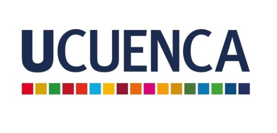

Universidad de Cuenca
Carrera: Tecnología Superior en Administración de Infraestructuras y Plataformas Tecnológicas
Estado: En curso
Institución: Universidad de Cuenca
Perfil Profesional

Carrera: Tecnología Superior en Administración de Infraestructuras y Plataformas Tecnológicas
Estado: En curso
Institución: Universidad de Cuenca
Institución: Colegio Fiscomisional Río Upano
Título obtenido: Técnico de Servicios en Aplicaciones Informáticas
Año de graduación: 2014